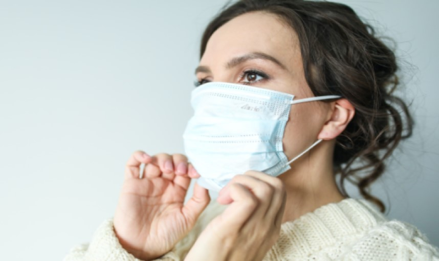
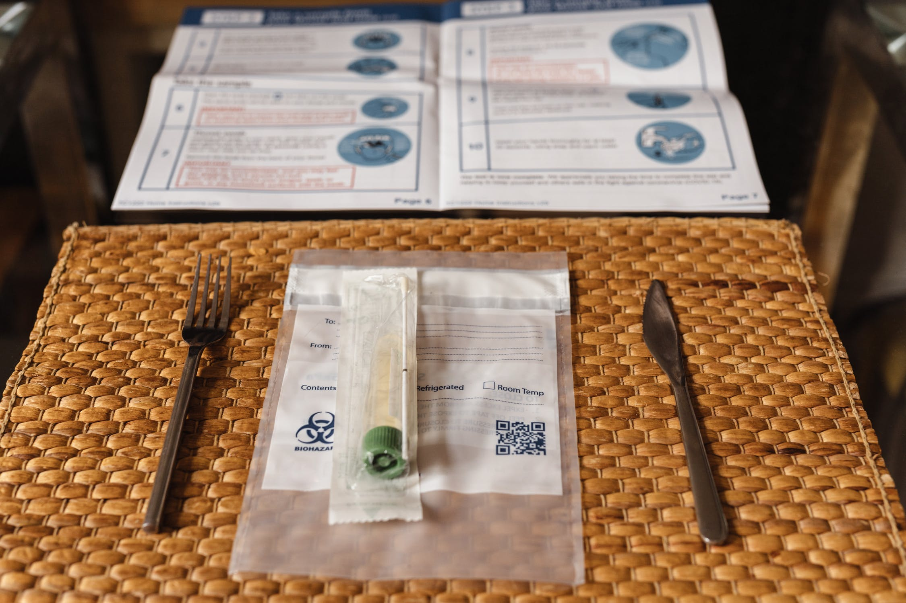
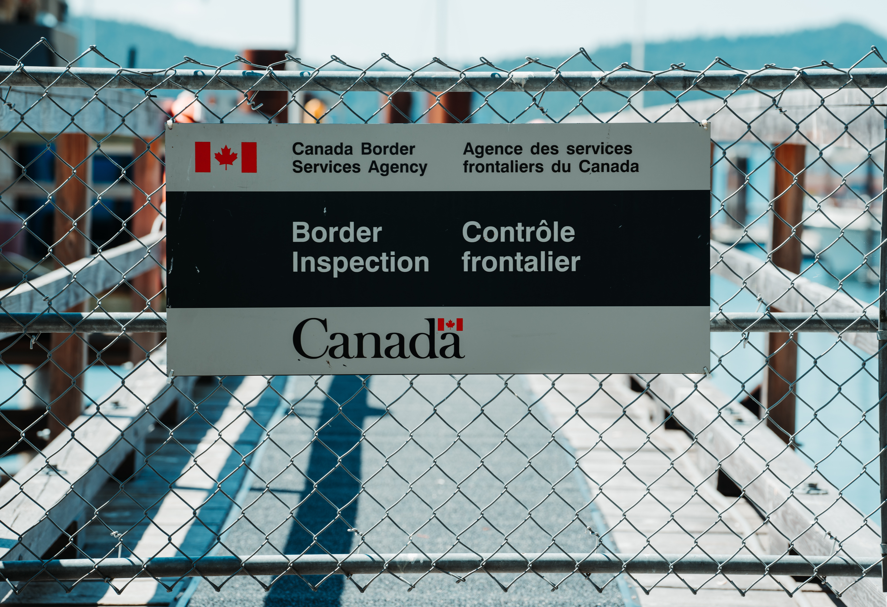
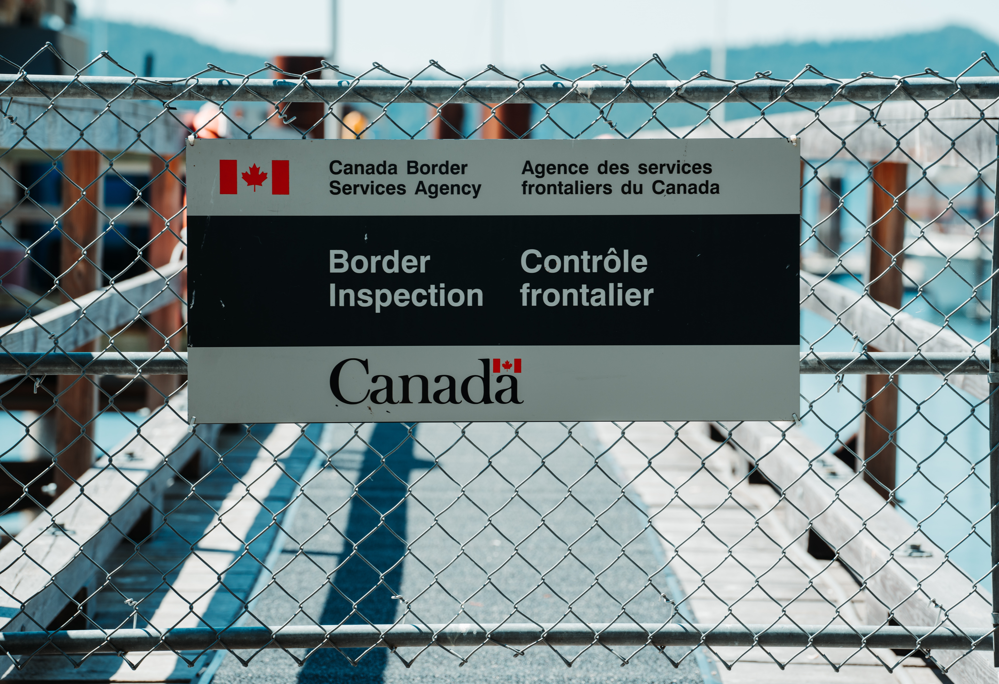
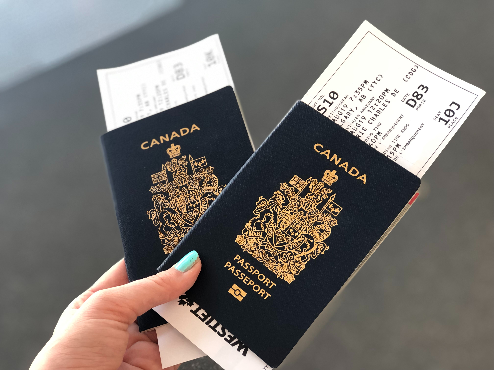
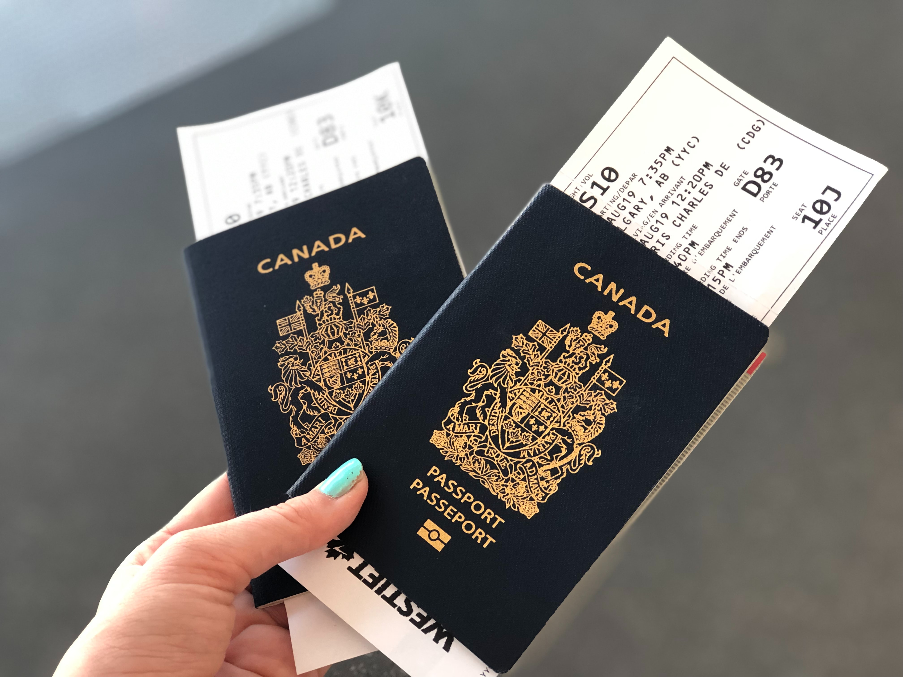
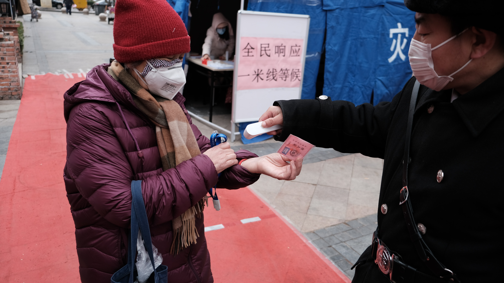
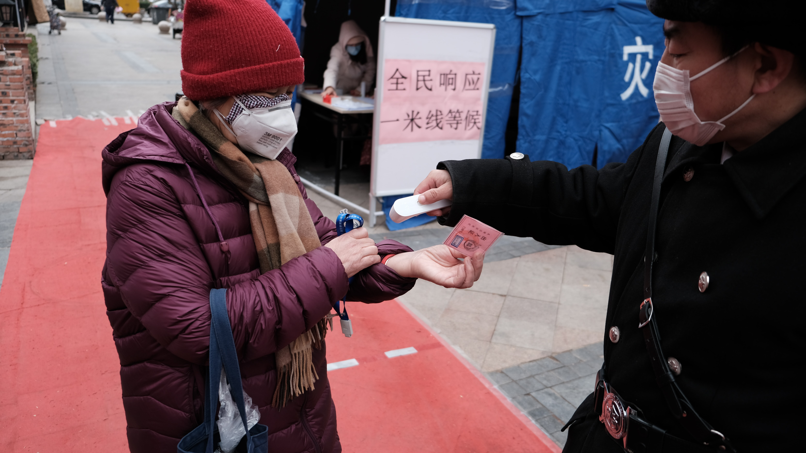

Throughout the course, you can use several navigation features and
functions.
View the previous page.
View the next page.
Open to access Help.
Open to view the table of contents.
Implementation Approach
Purpose and Theory
The purpose of this module is to provide guidance on how to
implement your national system. After completing module 6, you will be able to:
Identify the key components of an implementation plan
Define the sections of the implementation plan for each – the internal
and the external sections
Identify the key implementation framework components
Explain the relevance of consulting with key stakeholders when
developing an implementation approach
Implementation Plan – What to include?
An implementation plan considers everything you will need to do to
implement the option that is chosen. At a very high level, the implementation plan should include:
Scope of the program that specifies what it includes, what it
addresses, and what it excludes.
A schedule with the duration and sequence of activities (e.g., timeline
for development and approval of laws if selected).
Points in the timeline when you will need to obtain the necessary
approvals and support from decision-makers.
Resources and infrastructure required to implement and sustain the
program (e.g., people, equipment, money).
Milestones that mark major events or points in time, to monitor the
project’s progress.
Deliverables, including products (e.g., training programs and manuals
for inspectors).
Allies and partners whose support you will need (e.g., agencies,
departments, other government authorities) and who are linked with the work.
Implementation Plan – Overview
In the following screens, you will find some of the components of a
framework that you should consider as you put together the details of your implementation plan. These
components are highly interconnected and could be stand-alone or integrated with other activities. For
example, during an inspection it is possible to educate stakeholders and promote the use of best practices.
Integration with other programs may also be possible and could present an opportunity to advance biosafety
and biosecurity efforts through existing activities (e.g., mandatory training through post-secondary
institutions). The cost of the compliance strategy will need to be considered in your options development,
and activities prioritized based on their potential to achieve compliance.
An implementation plan has a number of components categorized under the
internal and external sections of the implementation plan. These will be discussed in the
following screens.
Something to think about
As you go through the components categorized under the internal and
external sections, you will notice that many of the activities are connected (e.g., if training is not yet
available for new staff and needs to be developed, or if training will be required on a new IT system,
this will push back the dates that new staff need to be brought on board). It is, therefore, recommended
that you develop a critical path (various project management software are available for this) before you
estimate the overall time to implement and the timing of milestones along the way.
Implementation Plan – Internal Section
The internal section of the implementation plan is
internal to the Ministry(ies) and Department(s) that will play a role in implementation. Consider:
Where will staff for the program come from (i.e., internal transfer or
recruitment) and how and when will they be brought on board? What are the requirements for the positions
needed?
What training will staff require? When and by whom will this training
be developed and when will it be available?
If there is to be a permitting or licensing component, how will the
information be managed (e.g., is there an Information Technology component?)? When, by whom, will the
system be selected and installed? What impact does this have on the training requirements established
above?
What co-operation is required from other parts of the Ministry(ies) and
Department(s) or other Ministries and Departments? Who will negotiate this, by when?
How will all impacted stakeholders (those that will need to comply with
any new requirements) be identified? How many are expected?
Implementation Plan – External Section
The external section of the implementation plan refers to
the impacted stakeholders who will have to comply with the biosafety and biosecurity program. This part of
the plan should include:
How will they find out about the new policy instruments?
How much of a challenge will this be for them? How much time will they
need before they can comply with the new requirements? How much support will they need from the Ministry
or Department?
If training will be required for them to come into compliance, is that
training available, if not how can it be made available? How long will that take? Are there some impacted
stakeholders who you expect to avoid the new requirements? How can we find them? What can you do to bring
them on board?
The following are some of the framework components that you should
consider as you put together the details of your implementation plan:
Governance structure
Compliance Promotion
Verification
Enforcement
Education and Training Program
Communications Strategy
Each of these will be discussed in greater detail in the screens to
follow.
Governance Structure
A governance structure describes how departments/agencies/organizations
relate to one another and define authority and management roles. Governance is important to make sure that
rules, norms, and actions are sustained, regulated, and held accountable. The formality of your structure
will depend on the internal rules and environment of your organization.
Compliance Promotion
Compliance promotion activities are aimed at increasing awareness,
educating, and motivating stakeholders to change or maintain target behaviours. Helping stakeholders
understand requirements allows them to make informed decisions about compliance and can reduce
non-compliance. Stakeholder consultation activities during the development of a national system are a good
opportunity to understand what type of communication and support will be required to increase the chances of
widespread compliance. Compliance promotion should use effective communication techniques tailored to
specific audiences or for broad communication.
What to do when designing education and training support?
In order to design education and training support, it is necessary to
first assess the number and types of stakeholders who will need to be trained and determine their needs:
Consider whether sector-specific training should be provided (e.g.,
academic institutions, public health laboratories)
Determine the objectives of education and training activities, how
training will be delivered (e.g., targeted outreach through train-the-trainer approach, on-line versus
on-site), and who can provide training (e.g. a third party, the regulator)
Determine if there is a formal (or even legal) requirement for
education and training so that a framework is in place to have it delivered appropriately and
consistently to stakeholders
Consider the education and training needs of individuals who will be
implementing the various program components (e.g., inspectors, licensing or permit program employees),
if you are building a new compliance program
Unvaccinated Travellers in Certain Circumstances
There are specific exemptions for children under the age of 12 and for
medically exempt travellers.
Hover over each section to learn more.

Unvaccinated
asymptomatic travellers who are medically exempt
Unvaccinated asymptomatic travellers 12 years
of age and over without symptoms who are medically exempt from receiving a vaccination receive a handout
with particular instructions to follow on arrival. They are not required to quarantine upon entering
Canada if they have a medical contraindication for getting a COVID-19 vaccine and comply with specific
measures.
Give medically exempt travellers the
appropriate handout.
Unvaccinated children
under 12 without symptoms.
Unvaccinated children under
12 without symptoms travelling with fully vaccinated parents or guardians receive a handout with
particular instructions to follow on arrival. They are not required to quarantine upon entering Canada
if both the child and the parents, step-parents, guardians or tutors, meet certain requirements in the
Order and comply with the conditions imposed on them by the Minister of Health.
For 14 days after arrival child cannot:
Go into certain settings (day care, school, camp, setting where
they will have contact with vulnerable people)
Travel on crowded public transportation
Attend large crowded settings
Child must take COVID-19 tests as instructed
Limit child’s contact with others
If fully vaccinated parents/guardians develops signs/symptoms or
receives positive result, both they and the child must quarantine
Border Measures in Canada Points of Entry (PoE) and Quarantine
Facilities
Click each image to learn more.
Airport
Currently, PHAC Officers are stationed at certain international
airports. On-site presence could be expanded to include additional airports, land borders and marine
ports as required.
Other PoEs
Other airports, land borders, marine ports, and rail are
supported by Quarantine Officers that conduct remote health assessments via the 24/7 Central
Notification System (CNS) phone line. The CNS also provide after hour support to airports.
Designated Quarantine Facilities (DQF)
A number of quarantine facilities across Canada (hotels or other
establishments) have been designated under the Quarantine Act.
Current Border Measures Applicable to All Travellers Entering Canada
When arriving at a point of entry, all travellers seeking entry into
Canada must answer any relevant questions asked by a screening officer, quarantine officer or other
designated public health official.
Additional health screening questions for COVID-19 are being asked by a
CBSA border services officers directly, or on an automated kiosk used to process arriving travellers
(Primary Inspection Kiosk [PIK], the NEXUS, and the ABC machines).
Sample “yes or no” Questions:
Do you currently have a cough, difficulty breathing, or feel you have
a fever?
Do you have accommodation where you can quarantine for 14 days?
Are there vulnerable people at the location where you plan to
quarantine?
Is your quarantine accommodation a group living environment (e.g.
group home or senior residence) or does it currently house different families?
Can you have food, medication or other necessities delivered to your
accommodation while in quarantine?
Every person must wear a non-medical mask or face covering that the
screening officer or quarantine officer considers appropriate upon entry and while in transit to isolation
or quarantine.
Is the Face Covering Appropriate?
Non-medical face masks are protective layers of absorbent fabric (such as
cotton) that snugly fit over the nose and mouth and are secured to the face with ties or ear loops. These
masks prevent respiratory droplets from contaminating others or landing on surfaces.
Masks or coverings should:
Be made of multiple layers of absorbent fabric (such as cotton)
Cover the mouth and nose without gaps
Fit securely to the head with ties or loops
Allow for easy breathing
Be changed as soon as possible if damp or dirty
Stay the same shape after machine washing and drying
Masks or coverings should not:
Be placed on children under the age of 2
Be placed on anyone unable to remove them without assistance or
anyone who has trouble breathing
Be made exclusively of plastic sheeting or materials that easily
fall apart (e.g. tissue)
Be shared with others
Impair vision or interfere with tasks
Warning Signs of Inappropriate Mask or Face Covering
Mask or face covering is made of non-breathable material (e.g.
plastic bag)
Mask or face covering is secured using tape or other inappropriate
material
Traveller is continuously adjusting the face covering
How to Remove an Inappropriate Mask or Face Covering
Request traveller to:
Put down any items being held (bags, passports, etc.) and ensure that
hands are free from any obstruction, including children
Sanitize hands with hand sanitizer (with minimum 60% alcohol based)
Lean their head over a bagged garbage bin and instruct them to
remove the mask with caution to avoid spread of respiratory droplets
Gently place facial covering in garbage bin rather than dropping it
from a height
Sanitize hands with hand sanitizer
Put on an appropriate face covering as described above.
Mandatory Quarantine for Asymptomatic Travellers
Unvaccinated or partially vaccinated Canadian citizens (including dual
citizens), people registered under the Indian Act, permanent residents of Canada, or protected persons
(refugee status) are allowed to enter Canada however they will be required to quarantine at a suitable
location.
The Screening Officers (SO) will:
Do the first screening by asking additional “yes or no” health
questions to help determine if the traveller has a suitable accommodation to quarantine for 14 days.
Asymptomatic travellers cannot quarantine with vulnerable persons
who did not travel with them, unless the vulnerable person consents, or is the parent or minor in a
parent-minor relationship
Asymptomatic travelers cannot quarantine with health care
providers or with those who provide care to vulnerable persons
Asymptomatic travellers must have a suitable place to quarantine,
and they are required to wear an appropriate mask or face covering while in transit to quarantine.
Refer the traveller to a clinical screening officer (CSO) or
quarantine officer (QO) when the traveller does not meet the criteria for suitable accommodation.
If the traveler has an appropriate place to quarantine, then travellers
must go directly to the place where they will quarantine without delay or as directed by a screening officer
or quarantine officer. Travellers must quarantine at their suitable place of quarantine for 14 days
Note: A new isolation period starts if the traveller becomes
symptomatic or tests positive, or is a close contact of someone who exhibits signs and symptoms of
COVID-19 (10 days)
Testing
Travellers must take two COVID-19 tests in Canada, one on arrival (day
1) either at an airport or land point of entry or at home, and one on day eight unless the traveller has
evidence of a positive PCR test taken 14 – 180 days prior to arrival.

Reporting and Monitoring
Travellers must report their arrival at their place of quarantine in
ArriveCAN or 1-833-641-0343
Travellers must monitor their health during their time in quarantine
and report daily on their health status relating to signs and symptoms of COVID-19 in ArriveCAN or
1-833-641-0343
If travellers develop signs and symptoms of COVID-19, receive a
positive COVID-19 molecular test, or are exposed to someone with a positive test result, they must
immediately isolate themselves from others for a period of 10 days and follow the instructions of the
local public health authority (contact details provided on GREEN handout)
Determining a Suitable Place to Quarantine or Isolate
Refers travellers without an appropriate place to quarantine or isolate
to the Clinical Screening Officer (CSO) or Quarantine Officer (QO) for further assessment.
The Screening Officer (CSO) will support the QO by doing
further assessment when the traveller does not meet the criteria for suitable accommodation and determine
the appropriate action.
They will ask additional questions to determine if the traveller has a
suitable place to isolate themselves for 14 days (e.g. if they have accommodations, reside with vulnerable
persons, have access to the necessities of life).
Questions may Include:
Do you have accommodation where you can quarantine for 14 days?
Allows for physical distancing.
Allows the traveller to have access to a separate bedroom from
those that did not travel. If possible, avoid sharing bedrooms and bathrooms, especially with those
who did not travel with you.
Are there vulnerable people (or healthcare providers or those who care
for vulnerable persons) at the location where you plan to do your 14 day quarantine?
Is your quarantine accommodation a group living environment (e.g.
group home or senior residence) or does it currently house different families?
Can you have food, medication and other necessities delivered to your
accommodation while you are in quarantine?
The traveller must not be in contact with vulnerable persons, unless the
vulnerable person is a consenting adult or is the parent or minor in a parent-minor relationship.
A vulnerable person is a person who:
has an underlying medical condition that makes the person
susceptible to complications relating to COVID-19;
has a compromised immune system from a medical condition or
treatment; or
is 65 years of age or older.
Underlying medical conditions that makes the person susceptible to
complications relating to COVID-19 include:
Heart disease
Hypertenssion (high blood pressure)
Lung disease
Diabetes
Cancer
Chronic Lung disease or moderate to severe asthma
Chronic kidney disease undergoing dialysis
Liver disease
Guidance:
SO can obtain consent from someone 65+ with no underlying health
conditions, but must inform the CSO or QO if vulnerable persons with underlying health conditions are
present at the traveller’s place of stay. The QO is responsible to validate the information, assess the
risk and make a decision on the suitability of the place of stay.
Review the following resources to learn more about underlying medical
conditions:
If the traveller does not have a suitable place, the asymptomatic
traveller will be required to quarantine in a quarantine facility. As defined in the Quarantine Act, a
Quarantine Facility is “any place that is used for the detention of a traveller.”
And:
If directed by a SO or QO, take transportation provided by the
Government of Canada to get to a quarantine facility
Remain in quarantine at the quarantine facility until the expiry of
the 14-day
With authorization, the traveller may leave a quarantine facility
before the expiry of the 14-day period in order to quarantine themselves in a suitable place or to leave
Canada in accordance with the Order
Symptomatic Travellers
Any person entering Canada who has COVID-19 or has signs and symptoms of
COVID-19 or has reasonable grounds to suspect they have such signs and symptoms, including a fever and a
cough or; a fever and difficulty breathing or; COVID-19 compatible symptoms must isolate.
Isolation is the “separation of persons who are infected with COVID-19 or
who have signs and symptoms of COVID-19 from others in such a manner as to prevent the spread of infection
or contamination.”
The traveller MUST
Isolate themselves in a suitable accommodation without delay and
remain in isolation until the expiry of the 10-day period that begins on the day on which the person
enters Canada; and
Undergo any health assessments required, monitor their signs and
symptoms and report to the public health authority specified by a screening officer or quarantine officer
if they require additional medical care.
Screening Officers should give symptomatic travellers a red handout and
contact the CSO/QO for further assessment or action.
If the traveller does not have a suitable place and/or is not able to get
to a suitable place without using public transportation, the symptomatic traveller will be required to
isolate in a quarantine facility.
If directed by a QO or SO, take transportation provided by the
Government of Canada to get to a quarantine facility
Remain in isolation at the quarantine facility until the expiry of
the 10-day period. With authorization, the traveller may leave a quarantine facility before the expiry of
the 10-day period in order to isolate himself or herself in a suitable place or to leave Canada in
accordance with the OIC.
Undergo any health assessments that a quarantine officer requires
while the person remains at the quarantine facility
Exempt Travellers
Some persons are not subject to the requirement to quarantine when
entering Canada for certain purposes (e.g. those performing an essential service as determined by the CPHO).
The exemption from quarantine does not apply if traveller has symptoms or has reasonable grounds to believe
that they have COVID-19. Travellers exempt from quarantine are not necessarily exempt from pre-arrival
testing requirement.
Travellers exempt from quarantine must still:
Wear a mask if in a shared space
Monitor health for symptoms of COVID-19 for 14 days each time
re-entering Canada
Respect public health guidance and instructions of the area where
they are travelling and prevention measures from their workplace
Maintain list of names and contact information of close contacts and
location visited during 14 day period
All exempt travellers should receive an orange handout.
Failure to comply with this Order is an offence under the Quarantine Act.
Individuals who contravene the mandatory isolation or the mandatory quarantine requirements may be subject
to a range of enforcement measures under the Quarantine Act, which include verbal and written warnings,
issuance of a ticket, and arrest, detention, or escort to a designated quarantine site.
Spot checks will be conducted by the Government of Canada to verify
compliance.
Maximum penalties include a fine of up to $750,000 and/or
imprisonment for six months. Peace officers will use their discretion in determining the most
appropriate action in each circumstance. Further, a person who causes a risk of imminent death or
serious bodily harm to another person while willfully or recklessly contravening this Act or the
regulations could be liable for a fine of up to $1,000,000 or imprisonment of up to three years, or to
both.
Amendments under the Contraventions Act now allow for increased
flexibility in enforcement of offences under the Quarantine Act. Law enforcement agencies, including the
Royal Canadian Mounted Police, local and provincial police forces, can issue tickets to individuals with
fines ranging from $825 to $5000, based on the seriousness of the non-compliance to the Quarantine Act and
the Order. In due course other PHAC officials with appropriate training and capacity, or other classes of
persons designated by the Minister of Health could also be an “enforcement authority” under the
Contraventions Act and would be able to issue tickets.
The Public Health Agency of Canada (PHAC) works with federal and
provincial partners to promote, monitor and verify compliance with the Order.
Summary
The purpose of the Quarantine Act is to protect public health by taking
comprehensive measures to prevent the introduction and spread of communicable diseases. Orders in Council
(emergency measures) are additional measures in times of pandemics such as COVID-19. If travellers are not
compliant, there are ways to enforce the Act, however the goal is promotion, education and compliance, not
enforcement.
Click complete to certify that you have reviewed the content and
completed all
activities.
The course has now been marked complete
Gallery
Some of the images I've sourced from Unsplash for Analytical Approach.


 

 

 
